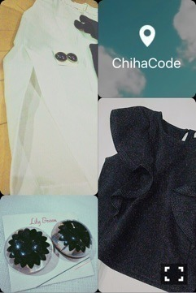

| 2016/07 16 Sat | 斎藤ちはる #ChihaCode と、三連休。(´>∀<｀)ゝ |
ちはるーむへようこそ(﹡ˆ ˆ﹡)
今日は前髪ピンで留めて
すっきりまとめてみたよ♡
金色のヘアアクセって付けてるだけで
こなれてるように見えるから
朝時間がなかった時とか
髪の毛、何か寂しいな〜って思った時に
使える便利なヘアアクセ(﹡ˆ ˆ﹡)
優里がよく金色のピンを付けてるんだけど
そのアレンジが可愛くて
参考にしてるんだ〜♡
-------------------------♡
土曜日のコーナーは！！
「ChihaCode」♡♡
私のファッションや、メイクを
掘り下げて紹介していくコーナーです\( ˆoˆ )/
実はこのコーナーが凄い人気で
私の服を好きって言ってくれる方が
こんなにもいたのかと
嬉しくなりました♡
今日は最近買った服で組み合わせた
モノクロコーデを紹介します♪

(とても見にくいのは許してね...)
(今後試行錯誤していくから...)
＊左上 : COCODEAL、ホワイトロングパンツ
くるぶしまであるロングパンツなんだけど
麻が使われてるから
とっても涼しげで、夏らしい！
ハイウエストになってるから
トップスをインして
スタイルアップを目指せるよ〜
ひざ下からスリットが入っていて
動いた時にチラッと足が見えて
少しセクシーにもなっちゃう♪
柄ものも色ものも
なんでも合わせやすそうで楽しみ♡
＊右下 : Lily Brown、ブラックトップス
丈は短めで、
基本は袖がないノースリーブなんだけど
胸元から付いてる大きなフリルが
腕まで続いてて二の腕をカバーしてくれる！
黒で丈が短いと
ボトムスが何にでも合うと思う！
ボーイッシュなショートパンツとかでも
柄のスカートでも。
でも着てみるとお上品だから
綺麗めなスカートにも合いそう♡
＊左下 : Lily Brown、イヤリング
透明な丸いガラスに
黒のお花のモチーフが入ってるイヤリング！
イヤリングって中々、
可愛いのが見当たらなくて
いつも苦戦しちゃうんだけど
とっても可愛いのを見つけたよ♪
サイズは大きめだから
コーディネートのポイントとして！
と、今日はこんな感じでございます♡
このコーナーは
自分がモデルさんになった気分で(笑)
紹介したいと思うので
皆さん良ければ参考にしてね( ◦˙ ˙◦ )
男の子の皆さんは
私が着てるの想像して読んでてね〜♡笑
(いつかは着た写真も載せるけど♪)
-------------------------♡
コメント見ていると三連休、
こんな予定があるよ！
と教えてくれる方もいれば
三連休だったんだ...忘れてた...
って方もいて、
私は実は後者でした。。
だって月曜日も学校あるし、テストあるから！
世の中が休みなんて聞いてないよ〜(> <)
っていう感じでした。笑
三連休も受験勉強や試験勉強で
みんな頑張ってるんだな〜と思って
心強くなったから、
レポート１つ終わらせたよ！！
しかも今までで1番終わらせるのが
早かった！！
みんなのおかげだね(﹡ˆ ˆ﹡)
ありがとう(﹡ˆ ˆ﹡)
そしてそしてテストや勉強、
頑張ろうね( ;o; )
私集中するときはするんだけど
急にスイッチが切れる瞬間があって...笑
そういうときは潔く
休憩することにしてる(`･ω･´)笑
スイッチオフには逆らえない(`･ω･´)
にひ。悪い顔だ。
♬ ChihaMusic
「SUN」星野源さん
聞いてると明るい気持ちになれる！
テレビでも沢山見ていたから
何となくダンスも踊りたくなる♪
この曲を聞くと思い出すのは
日村さんと、さゆ。
おやすみ♡
斎藤ちはる